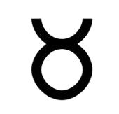

Le Taureau signe du Zodiaque
Le Taureau est le deuxième des douze signes du zodiaque. Dans l'Antiquité, après le passage du point vernal, le Soleil entrait dans cette constellation, marquant une période de stabilité et de croissance au printemps. Le Taureau symbolisait alors la force tranquille de la nature en plein renouveau.
En astrologie, le Taureau, lié à l'élément Terre, est souvent associé à la patience, à la persévérance, à la sensibilité et à un certain attachement au confort matériel. Les natifs du Taureau sont réputés être fiables, calmes, loyaux et travailleurs. Ils peuvent cependant se montrer parfois têtus, possessifs et résistants au changement. (Je dois en connaître un paquet...)